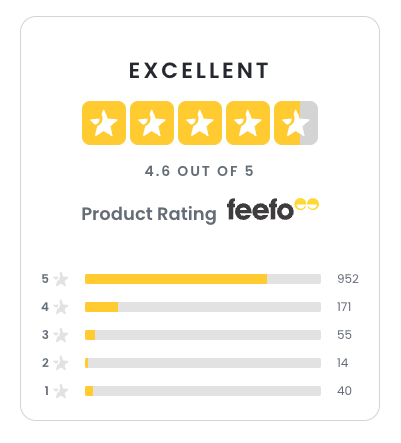
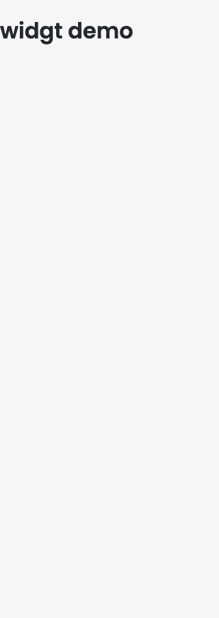
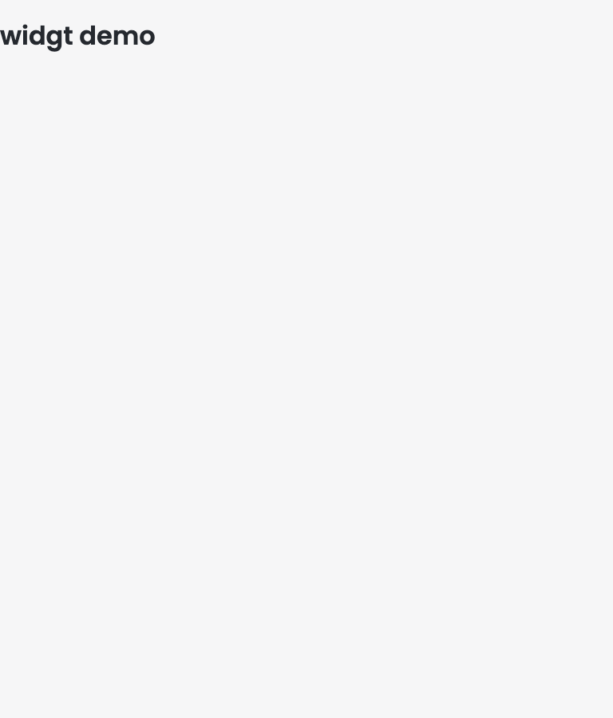
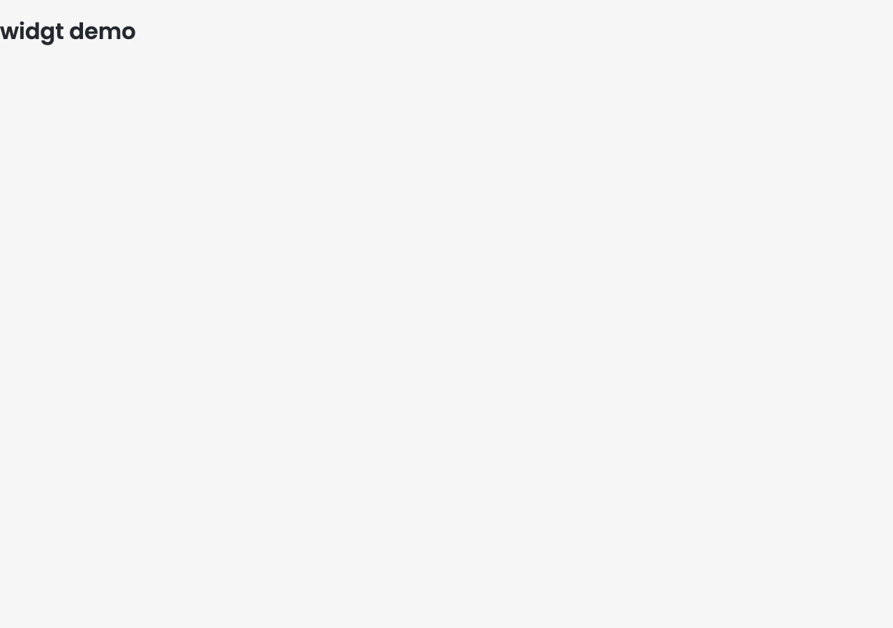

widgt review loop
1 iterations · latest 12.4 · best 12.4 · target 90
Generated 2026-10-13T15:53:45.083Z. Scores come from the deterministic harness in review/; the generator never grades itself.
| Iter | Total | Gates | Contract tests | Unit tests + AC coverage | Accessibility (axe) | Responsiveness | Visual similarity | AI judge | Commit | Change |
|---|---|---|---|---|---|---|---|---|---|---|
| 00 | 12.4 | pass | 0 | 70 | 0 | 0 | 0 | – | latest | baseline |
Iteration 00 12.4
all gates pass · commit latest · baseline
- Contract tests 0
- Unit tests + AC coverage 70
- Accessibility (axe) 0
- Responsiveness 0
- Visual similarity 0
- AI judge –


not captured
not captured






not captured